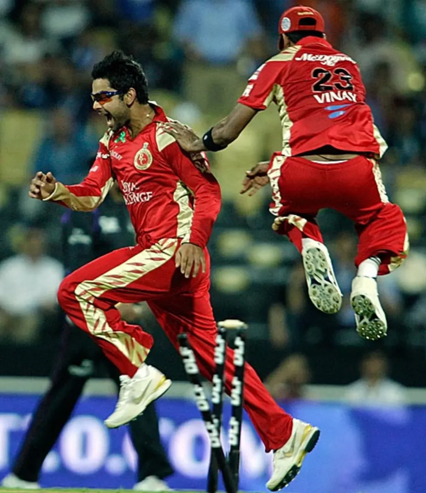
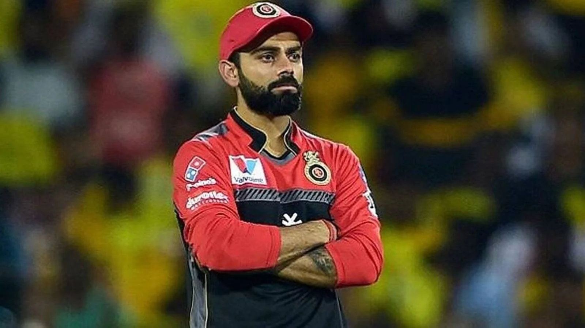

Every mega auction cycle, the same question floated through the cricket world like clockwork. Will Virat Kohli finally leave RCB?
Mumbai Indians had the dynasty. Chennai Super Kings had MS Dhoni and five trophies. Kolkata Knight Riders had the budget. Gujarat Titans and Lucknow Super Giants were willing to throw blank cheques. Every franchise in the IPL, at some point or another, wanted Virat Kohli in their jersey.
He said no. Every single time.
For seventeen years, Virat Kohli wore one colour. Red and gold. Through heartbreaking final losses, through seasons where the team finished at the bottom of the table, through management changes and coaching carousels and squad overhauls that left him with new teammates every two years. He stayed.
This is the story of why. And it starts with a meeting in 2011 that nobody outside the RCB inner circle knew about.
The Teenager Nobody Wanted
In the 2008 IPL auction, Virat Kohli was not a headline purchase. He wasn't Dhoni at 9.5 crore or Andrew Symonds at 5.4 crore. He was a skinny 19-year-old from Delhi who had just led India to an Under-19 World Cup victory, and most franchise owners didn't know what to do with him.
RCB bought him for his base price. No bidding war. No excitement in the auction room. Just a quiet transaction for a teenager who most analysts assumed would spend a few seasons warming the bench before disappearing from IPL cricket entirely.
That first season, Kohli played 13 matches and scored 165 runs at a strike rate of 107. Decent numbers for a teenager, but nothing that suggested he would become the most important player in franchise cricket history. He batted in the middle order, often came in when the game was already decided, and spent most of his time watching from the other end as players like Jacques Kallis and Ross Taylor did the heavy lifting.
Virat Kohli was bought by RCB in the 2008 IPL auction for just 20 lakh (approx $50,000). By 2024, his retention price was 21 crore, a value increase of over 100x. No other player in IPL history has seen that kind of appreciation with one franchise.
But Kohli had something that the stats didn't capture. He had a hunger that bordered on obsession. Teammates from those early seasons describe a player who would arrive at practice two hours before everyone else, who would refuse to leave the nets until the coaching staff physically turned off the lights, and who treated every domestic T20 match like a World Cup final.

The 2011 Meeting That Changed Everything
By 2011, Kohli was no longer a fringe player. He had scored his first IPL century, he was establishing himself in the Indian ODI team, and other franchises were starting to take notice. The first mega auction was approaching, and every team was recalculating their retention strategies.
This is where the story gets interesting.
According to multiple accounts from people close to the RCB management, Vijay Mallya (then the franchise owner) arranged a private meeting with Kohli in Bangalore. No agents. No intermediaries. Just Mallya, a couple of senior franchise officials, and a 22-year-old cricketer who was about to become the most expensive retention in IPL history.
Mallya didn't offer Kohli more money than other franchises. He couldn't. The retention rules had financial caps, and other teams could easily match or exceed whatever RCB put on the table. Instead, Mallya made Kohli a promise that no amount of money could buy.
He told Kohli: "This franchise will be built around you. Not around an overseas superstar. Not around a coach's philosophy. Around you. Your vision. Your standards. Your culture."
For a 22-year-old who had spent his entire career being told to wait his turn, being told he was too aggressive, being told he needed to "earn" his place in the hierarchy, those words landed like a thunderbolt.
"Other teams offered me contracts. Good contracts. But nobody offered me ownership of a vision. RCB didn't just want me as a player. They wanted me as the foundation."Virat Kohli, reflecting on his decision to stay
Kohli accepted the retention. He turned down every approach from every other franchise. And from that moment forward, Royal Challengers Bangalore became synonymous with one name: Virat Kohli.
The Offers He Turned Down
The IPL has had multiple mega auctions since that 2011 meeting. In 2014. In 2018. In 2022. Each time, the entire player pool was reshuffled, and each time, Kohli could have tested the open market.
The numbers he could have commanded are staggering. By 2018, Kohli was the best batsman in the world across all formats. He was the Indian team captain. He was the most marketable cricketer on the planet. If he had entered the 2018 mega auction as an unrestricted free agent, the bidding war would have been historic.
Multiple reports suggest that Mumbai Indians explored the possibility of signing Kohli during one of the mega auction cycles. The idea of Kohli and Rohit Sharma in the same lineup, the two greatest white-ball batsmen of their generation playing for India's most successful franchise, was a tantalising prospect for the Mumbai ownership group.
Chennai Super Kings, according to former IPL insiders, also made informal enquiries. Dhoni and Kohli in the same T20 team? The commercial value alone would have been worth hundreds of crores.
Kohli said no to all of it. Not because he didn't understand the value of those offers. Not because he wasn't tempted. But because he had made a commitment, and breaking it would have meant becoming someone he didn't want to be.
2016: The Year That Almost Broke Him
If there was ever a season where Kohli's loyalty was tested to its absolute limit, it was 2016.
That year, Kohli played one of the greatest individual IPL seasons in history. He scored 973 runs in a single season, a record that still stands. He hit four centuries. He carried RCB on his back through the group stage, through the playoffs, and all the way to the final at the Chinnaswamy Stadium in Bangalore.

And then RCB lost the final to Sunrisers Hyderabad. At home. In front of 40,000 fans who had waited years for this moment.
Kohli's face after that loss is one of the most replayed images in IPL history. The devastation. The disbelief. The look of a man who had given everything he had, who had played one of the greatest T20 seasons any human being has ever played, and it still wasn't enough.
That was the moment when most players would have started thinking about an exit. If 973 runs can't win a title here, maybe nothing can. Maybe this franchise is cursed. Maybe I need to go somewhere where winning is a habit, not a miracle.
Kohli never had that thought. Or if he did, he buried it so deep that nobody ever saw it. When asked about his future after the 2016 final, with tears still drying on his face, he said something that captured his entire relationship with RCB in one sentence.
"I will be here next year. And the year after that. Until we win this thing."
Why Loyalty is Rare in IPL
To understand why Kohli's loyalty is remarkable, you need to understand the economics of the IPL.
The IPL is designed to prevent loyalty. Mega auctions reset squads every few years. The retention rules are deliberately restrictive, forcing franchises to make brutal choices about which players to keep. The salary cap means that keeping one player at a premium often means losing two or three others. The entire system is built around the idea that player movement creates drama, and drama creates viewership.
Look at the other great players of Kohli's generation. Rohit Sharma spent time at Deccan Chargers before moving to Mumbai Indians. KL Rahul went from RCB to Punjab to Lucknow. Hardik Pandya left Mumbai for Gujarat and then came back. Even Dhoni was briefly separated from CSK during the franchise's two-year suspension.
Player movement is the norm. Loyalty is the exception. And nobody has been more exceptionally loyal than Virat Kohli.
Virat Kohli is the only player in IPL history to have played for just one franchise across 17+ seasons. He holds the record for most runs scored for a single franchise, most matches played for a single franchise, and most catches taken for a single franchise. His entire IPL career is one colour: red and gold.
The Payoff That Took Seventeen Years
And then came 2025.
After sixteen years of heartbreak, after being labelled the best player to never win an IPL title, after watching other franchises celebrate while he walked back to an empty dressing room year after year, it finally happened.
The images from that night are burned into the memory of every Indian cricket fan. Kohli, the man who never left, lifting the trophy he had chased for almost two decades. The tears. The roar from the Chinnaswamy crowd. The vindication of every single decision he had ever made to stay when leaving would have been easier.
And then, just to make sure nobody could ever question his loyalty again, RCB won it again in 2026. Back-to-back titles. The franchise that had been called "chokers" for fifteen years suddenly had more recent trophies than most of the "traditional" powerhouses.
There is a photograph from the 2026 celebrations that captures everything. Kohli is standing in the middle of the Chinnaswamy outfield, holding the trophy, surrounded by teammates. But he's not looking at the trophy. He's looking at the crowd. At the 40,000 people who wore his jersey for seventeen years without a title, who showed up every season believing that this might be the year, who never stopped chanting his name even when the scoreboard said they should.
That photograph is the answer to every question anyone has ever asked about why Virat Kohli never left RCB. He didn't stay because of a contract. He didn't stay because of money. He stayed because loyalty, real loyalty, the kind that survives fifteen years of failure before it's rewarded, is the rarest thing in professional sport. And he wanted to be the proof that it still exists.
📷 Image Credits: Images via BCCI/IPL/RCB
Frequently Asked Questions
Why did Virat Kohli never leave RCB?
Virat Kohli stayed at RCB for his entire IPL career because of a deep emotional bond with the franchise that began in 2008. A pivotal 2011 meeting with the franchise owners convinced him to commit long-term. He built his legacy around loyalty rather than chasing titles elsewhere, and was eventually vindicated with back-to-back IPL wins in 2025 and 2026.
How many IPL seasons did Virat Kohli play for RCB?
Virat Kohli has played for Royal Challengers Bengaluru since the inaugural IPL season in 2008. He has never represented any other IPL franchise, making him the longest-serving one-franchise player in IPL history with 17+ consecutive seasons.
Did other IPL teams try to buy Virat Kohli?
Yes, multiple IPL franchises reportedly approached Kohli or expressed interest during mega auction cycles. Mumbai Indians, Chennai Super Kings, and newer franchises were all willing to offer massive contracts. Kohli chose to stay at RCB every single time through the retention process.
When did Virat Kohli become RCB captain?
Virat Kohli was appointed RCB captain in 2013, taking over from Daniel Vettori. He led the franchise until the end of the 2021 season, when he stepped down from captaincy while continuing to play for RCB as a senior player.
How many IPL titles did Virat Kohli win with RCB?
Virat Kohli won the IPL title with RCB in 2025 and 2026, ending years of heartbreak and earning back-to-back championships. Before that, his closest attempt was in 2016 when RCB finished as runners-up after he scored a record 973 runs in a single season.